Seleccion Campeona del Mundo

Poster oficial del Mundial de Suecia 1958

Trofeo del Mundial de Suecia 1958

Album de cromos del Mundial de Suecia 1958

Balon oficial del Mundial de Suecia 1958
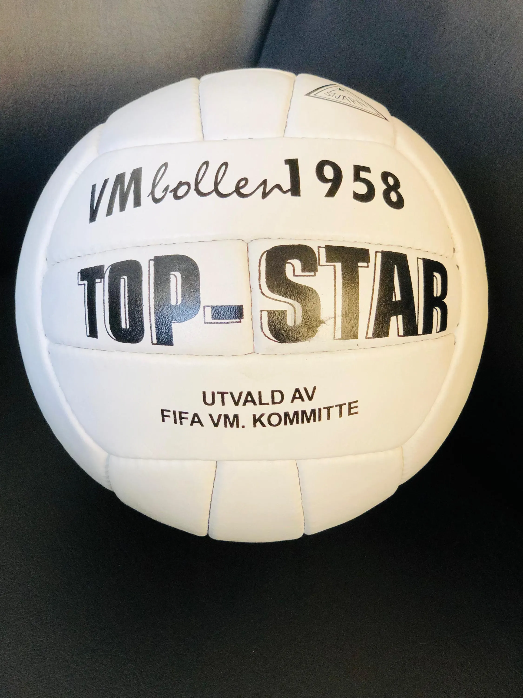
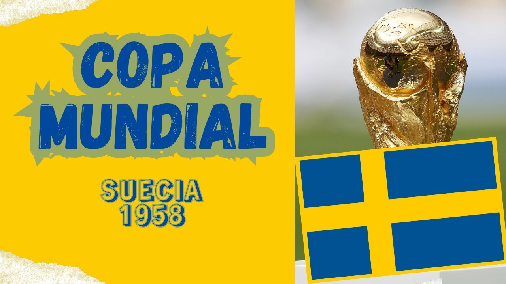
Seleccion Campeona del Mundo
Poster oficial del Mundial de Suecia 1958
Trofeo del Mundial de Suecia 1958
Album de cromos del Mundial de Suecia 1958
Balon oficial del Mundial de Suecia 1958


Estadísticas del Mundial Suecia 1958
Estadios del Mundial de Suecia 1958
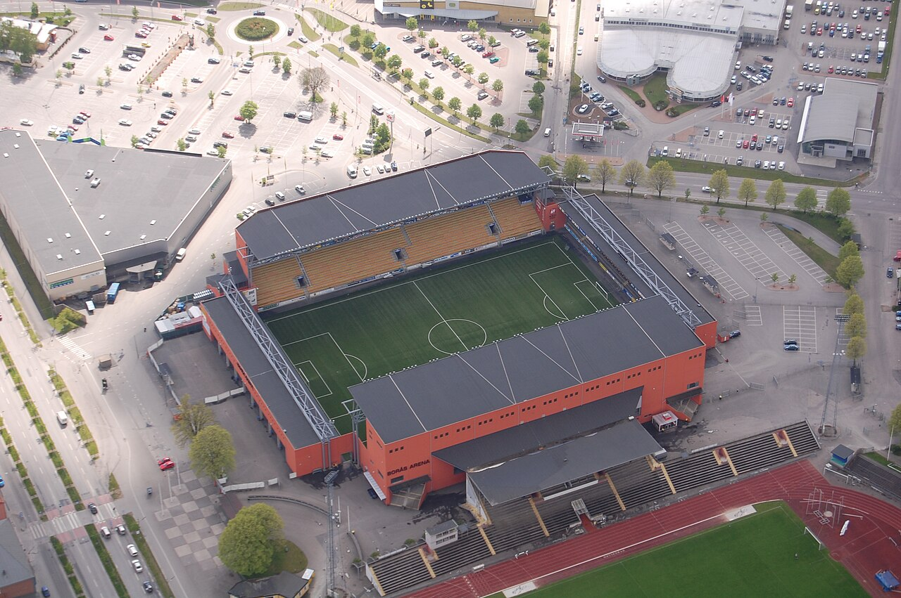
Ryavallen - Boras

Tunavalen - Eskilstuna

Estadio Rasunda - Solna

Nya Ullevi - Gotemburgo
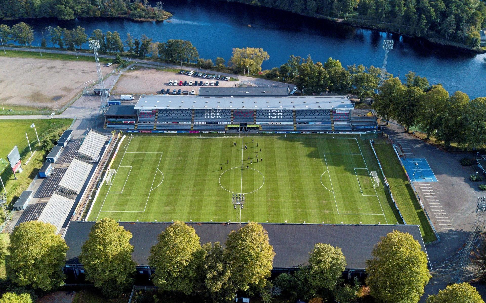
Orjans Vall - Halmstad

Olympiastadion - Helsinborg

Malmo Stadium - Malmo
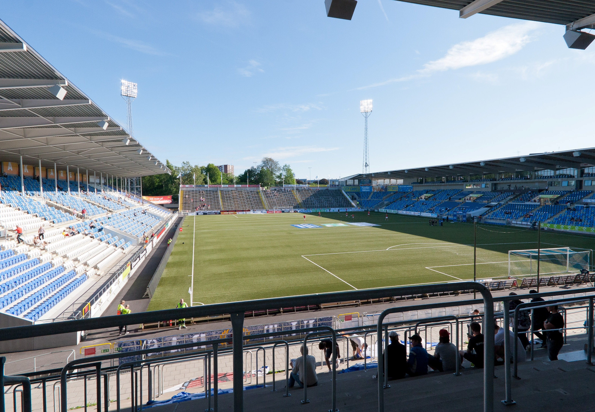
Iddrotsparken - Norrkoping
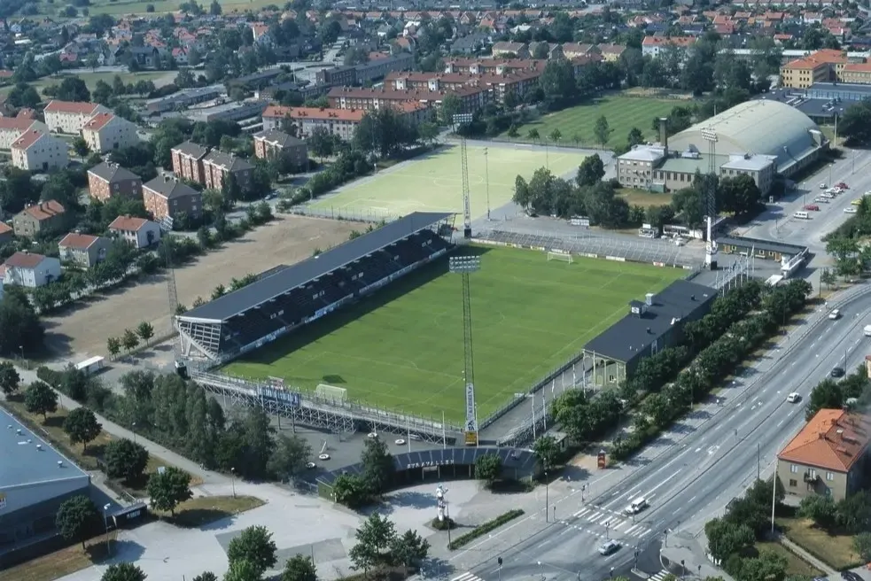
Eyravallen - Orebro
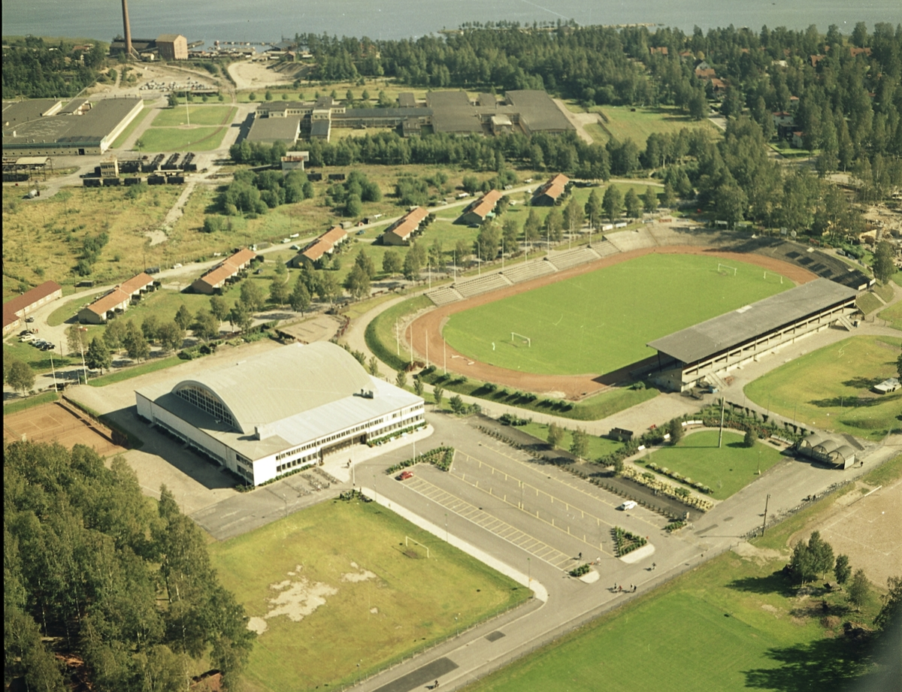
Estadio Jarnvallen - Sandviken
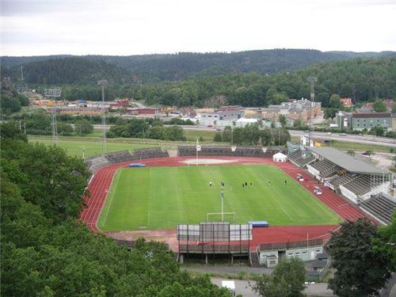
Rimnersvallen - Uddevalla
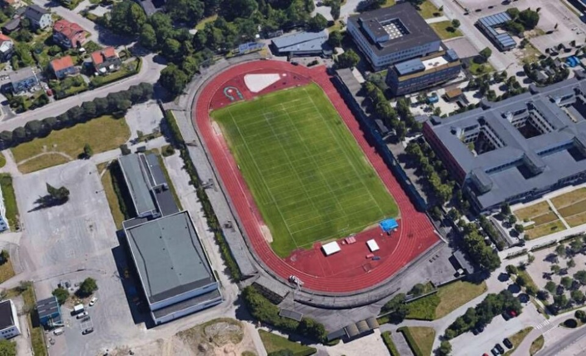
Arosvallen - Vasteras
Semifinales del Mundial de Suecia 1958

Final del Mundial de Suecia 1958
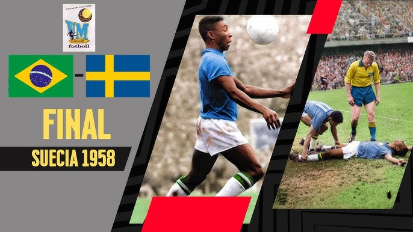
Tabla de puntajes del Mundial de Suecia 1958

Goleadores del Mundial de Suecia 1958
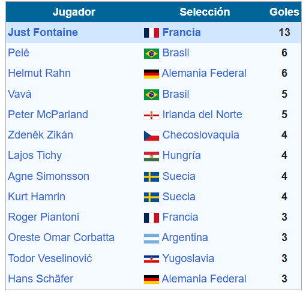
| Fecha | Fase | Partido | Resultado | Estadio |
|---|---|---|---|---|
| 08/06/1958 | Grupo 3 | Suecia vs México | 3-0 | Råsunda Stadium (Solna) |
| 08/06/1958 | Grupo 4 | Inglaterra vs Unión Soviética | 2-2 | Ullevi (Gotemburgo) |
| 11/06/1958 | Grupo 1 | Alemania Occidental vs Argentina | 3-1 | Malmö Stadium |
| 15/06/1958 | Grupo 3 | Suecia vs Hungría | 2-1 | Råsunda Stadium (Solna) |
| 15/06/1958 | Grupo 2 | Francia vs Paraguay | 7-3 | Idrottsparken (Norrköping) |
| 19/06/1958 | Cuartos | Brasil vs Gales | 1-0 | Råsunda Stadium (Solna) |
| 19/06/1958 | Cuartos | Francia vs Irlanda del Norte | 4-0 | Idrottsparken (Norrköping) |
| 19/06/1958 | Cuartos | Suecia vs Unión Soviética | 2-0 | Ullevi (Gotemburgo) |
| 19/06/1958 | Cuartos | Alemania Occidental vs Yugoslavia | 1-0 | Malmö Stadium |
| 24/06/1958 | Semifinal | Brasil vs Francia | 5-2 | Råsunda Stadium (Solna) |
| 24/06/1958 | Semifinal | Suecia vs Alemania Occidental | 3-1 | Ullevi (Gotemburgo) |
| 28/06/1958 | Tercer Lugar | Francia vs Alemania Occidental | 6-3 | Ullevi (Gotemburgo) |
| 29/06/1958 | Final | Brasil vs Suecia | 5-2 | Råsunda Stadium (Solna) |
| Concepto | Dato |
|---|---|
| Campeón | 🇧🇷 Brasil |
| Subcampeón | 🇸🇪 Suecia |
| Tercer Lugar | 🇫🇷 Francia |
| Cuarto Lugar | 🇩🇪 Alemania Occidental |
| Partidos jugados | 35 |
| Goles totales | 126 |
| Promedio de goles por partido | 3.60 |
| Asistencia total | 819.810 espectadores |
| Promedio de asistencia | ≈ 23.423 por partido |
| Máximo Goleador | Just Fontaine (Francia) - 13 goles |
| Selecciones participantes | 16 |
| Sede | Suecia |
| Nota Histórica | Primer título de Brasil • Debut de Pelé (17 años) |